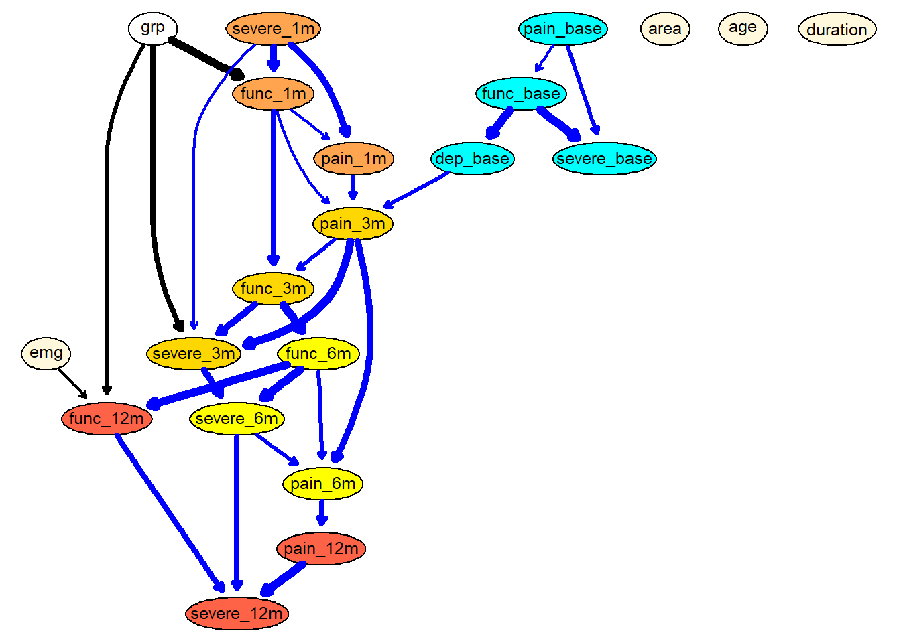

2-bn_analysis
Bernard
2020-09-08
Last updated: 2021-06-28
Checks: 7 0
Knit directory: 2020_cts_bn/
This reproducible R Markdown analysis was created with workflowr (version 1.6.2). The Checks tab describes the reproducibility checks that were applied when the results were created. The Past versions tab lists the development history.
Great! Since the R Markdown file has been committed to the Git repository, you know the exact version of the code that produced these results.
Great job! The global environment was empty. Objects defined in the global environment can affect the analysis in your R Markdown file in unknown ways. For reproduciblity it’s best to always run the code in an empty environment.
The command set.seed(20200907) was run prior to running the code in the R Markdown file. Setting a seed ensures that any results that rely on randomness, e.g. subsampling or permutations, are reproducible.
Great job! Recording the operating system, R version, and package versions is critical for reproducibility.
Nice! There were no cached chunks for this analysis, so you can be confident that you successfully produced the results during this run.
Great job! Using relative paths to the files within your workflowr project makes it easier to run your code on other machines.
Great! You are using Git for version control. Tracking code development and connecting the code version to the results is critical for reproducibility.
The results in this page were generated with repository version 9fc2349. See the Past versions tab to see a history of the changes made to the R Markdown and HTML files.
Note that you need to be careful to ensure that all relevant files for the analysis have been committed to Git prior to generating the results (you can use wflow_publish or wflow_git_commit). workflowr only checks the R Markdown file, but you know if there are other scripts or data files that it depends on. Below is the status of the Git repository when the results were generated:
Ignored files:
Ignored: .Rhistory
Ignored: .Rproj.user/
Note that any generated files, e.g. HTML, png, CSS, etc., are not included in this status report because it is ok for generated content to have uncommitted changes.
These are the previous versions of the repository in which changes were made to the R Markdown (analysis/2-bn_analysis.Rmd) and HTML (docs/2-bn_analysis.html) files. If you’ve configured a remote Git repository (see ?wflow_git_remote), click on the hyperlinks in the table below to view the files as they were in that past version.
| File | Version | Author | Date | Message |
|---|---|---|---|---|
| Rmd | 9fc2349 | bernard-liew | 2021-06-28 | Publish BN results |
| Rmd | f439ba8 | bernard-liew | 2021-06-25 | changed graph and added emg. |
| Rmd | 53feb1c | bernard-liew | 2021-06-23 | added bayesian networks analysis |
| Rmd | c7e5ff7 | bernard-liew | 2021-04-29 | added reporting of analysis |
| Rmd | 278a36b | bernard-liew | 2021-04-14 | added bn viewer |
| html | 278a36b | bernard-liew | 2021-04-14 | added bn viewer |
| Rmd | 5ff7ce6 | bernard-liew | 2021-04-14 | Added bnviewer |
| Rmd | 880adc7 | bernard-liew | 2021-04-13 | updated bn analysis |
| html | c142098 | bernard-liew | 2020-11-23 | Build site. |
| Rmd | 2266d36 | bernard-liew | 2020-11-23 | added explanation to graphs |
| html | a6948ce | bernard-liew | 2020-10-26 | initial analysis |
| Rmd | fe17d91 | bernard-liew | 2020-10-26 | initial analysis |
Introduction
This is an example of a Bayesian network, with directed arcs. I only perform the analysis on a subset of provided variables.
Import libraries
rm (list = ls())
# Helper
library (tidyverse)
library (cowplot)
library (ggpubr)
library (flextable)
library (officer)
# BN
library (bnlearn)
# Model
library (caret)
# Feature parallel
library (doParallel)
# Plot
library (Rgraphviz)
library (bnviewer)
# Helper
return_marginal <- function (x) {
x <- x[-1, , drop = FALSE]
x <- apply (x, 1, mean)
return (x)
}Import data
dat <- readRDS ("output/dat.RDS")
load ("output/bn_data.RData")Collapse variables
dat <- dat %>%
mutate (ppt_medn_base = (ppt_medn_aff_base + ppt_medn_naff_base)/2,
ppt_uln_base = (ppt_uln_aff_base + ppt_uln_naff_base)/2,
ppt_radn_base = (ppt_radn_aff_base + ppt_radn_naff_base)/2,
ppt_neck_base = (ppt_neck_aff_base + ppt_neck_naff_base)/2,
ppt_cts_base = (ppt_cts_aff_base + ppt_cts_naff_base)/2,
ppt_ta_base = (ppt_ta_aff_base + ppt_ta_naff_base)/2) %>%
select (-c(ppt_medn_aff_base:ppt_ta_naff_base)) BN analysis
Create blacklist
var.excl <- c(grep ("groc", names (dat), value = TRUE) ,
grep ("mean", names (dat), value = TRUE),
grep ("ppt", names (dat), value = TRUE),
#"age",
#"pain_years",
#"pain_extent",
"aff_side"
#"emg"
)
df.bn = as.data.frame (dat)[, !names (dat) %in% var.excl] %>%
na.omit()
names (df.bn)[grepl ("years", names (df.bn))] <- "duration"
names (df.bn)[grepl ("extent", names (df.bn))] <- "area"
names (df.bn)[grepl ("cts_base", names (df.bn))] <- "ct_base"
names (df.bn)[grepl ("ppt", names (df.bn))] <- str_remove (names (df.bn)[grepl ("ppt", names (df.bn))], "ppt_")
names (df.bn)[grepl ("cts", names (df.bn))] <- str_remove (names (df.bn)[grepl ("cts", names (df.bn))], "cts_")
names (df.bn)[grepl ("worst", names (df.bn))] <- str_remove (names (df.bn)[grepl ("worst", names (df.bn))], "worst_")
df.bn$grp <- factor (df.bn$grp)
rx.var <- "grp"
demo.var = grep("age|duration|emg|area", colnames (df.bn), value = TRUE)
base.var = grep("_base", colnames (df.bn), value = TRUE)
mth1.var = grep("_1m", colnames (df.bn), value = TRUE)
mth3.var = grep("_3m", colnames (df.bn), value = TRUE)
mth6.var = grep("_6m", colnames (df.bn), value = TRUE)
outcome.var = grep("_12m", colnames (df.bn), value = TRUE)
pair_var <- expand.grid(from = names (df.bn),
to = names (df.bn)) %>%
rownames_to_column()
tiers_keep <- pair_var %>%
filter (!(grepl (paste0(outcome.var, collapse = "|"),from))) %>%
filter (!(grepl (paste0(rx.var, collapse = "|"),to))) %>%
filter (!(grepl (paste0(mth6.var, collapse = "|"), from) &
grepl (paste0(c(demo.var, base.var, mth1.var, mth3.var), collapse = "|"),to))) %>%
filter (!(grepl (paste0(mth3.var, collapse = "|"), from) &
grepl (paste0(c(demo.var, base.var, mth1.var), collapse = "|"),to))) %>%
filter (!(grepl (paste0(mth1.var, collapse = "|"), from) &
grepl (paste0(c(demo.var, base.var), collapse = "|"),to))) %>%
filter (!(grepl (paste0(base.var, collapse = "|"), from) &
grepl (paste0(c(demo.var), collapse = "|"),to))) %>%
filter (!(grepl (paste0(rx.var, collapse = "|"), from) &
grepl (paste0(c(demo.var, base.var), collapse = "|"),to)))
bl <- anti_join(pair_var, tiers_keep, by = "rowname") %>%
filter (from != to) %>%
select (from, to)Explore
df.bn.num <- df.bn %>%
select_if(is.numeric)
M <- cor(df.bn.num)
corrplot::corrplot(M, method = "circle")Descriptive
ord <- names (df.bn) [!grepl ("emg", names (df.bn))]
df_plot <- df.bn %>%
select (-emg) %>%
pivot_longer(cols = -grp,
names_to = "var",
values_to = "val") %>%
mutate (var = factor (var, levels = ord )) %>%
group_by(grp, var) %>%
summarize (Mean = mean (val),
Sd = sd (val)) %>%
ggplot () +
geom_point (aes (x = grp, y = Mean), stat = "identity") +
geom_errorbar(aes (x = grp, ymin = Mean - Sd, ymax = Mean + Sd), width = 0) +
scale_x_discrete(labels=c("1" = "MT",
"2" = "Surgery")) +
xlab ("Group") +
ylab ("Scores") +
facet_wrap(~ var, ncol = 4, scales = "free") +
theme_cowplot()`summarise()` regrouping output by 'grp' (override with `.groups` argument)df_plot
Build the final model using model averaging
set.seed (123)
boot <- boot.strength(df.bn,
R = 200,
algorithm = "hc",
algorithm.args = list (blacklist = bl))Get averaged model
avg <- averaged.network(boot, threshold = 0.5)
fit <- bn.fit (avg, df.bn, method = "mle")
g <- strength.plot(avg, boot, shape = "ellipse", render = FALSE)
graph::nodeRenderInfo(g) = list(fontsize=14)
# Make color
arc_col <- data.frame(arcs = names (edgeRenderInfo(g)$col)) %>%
separate(arcs, c("parent", "child"), sep = "~")
coef_fit <- coef(fit) %>%
map_if (is.vector, ~.x[!grepl("Intercept", names (.x))]) %>%
map_if (is.matrix, return_marginal) %>%
unlist ()
coef_fit <- data.frame(arcs = names (coef_fit), coefs = coef_fit) %>%
separate(arcs, c ("child", "parent"), sep = "[.]")
new_col <- arc_col %>%
left_join(coef_fit, by = c("parent", "child")) %>%
mutate (coefs = replace_na(coefs,88)) %>%
mutate (col = ifelse (coefs < 0, "red",
ifelse (coefs == 88, "black", "blue")))
new_arc_col <- new_col$col
names (new_arc_col) <- names (edgeRenderInfo(g)$col)
nodeRenderInfo(g)$fill[base.var] = "cyan"
nodeRenderInfo(g)$fill[demo.var] = "cornsilk"
nodeRenderInfo(g)$fill[mth1.var] = "tan1"
nodeRenderInfo(g)$fill[mth3.var] = "gold"
nodeRenderInfo(g)$fill[mth6.var] = "yellow"
nodeRenderInfo(g)$fill[outcome.var] = "tomato"
edgeRenderInfo(g)$col <- new_arc_col
graph::nodeRenderInfo(g) = list(fontsize=14)
renderGraph(g)
viewer(avg,
bayesianNetwork.width = "100%",
bayesianNetwork.height = "80vh",
bayesianNetwork.layout = "layout_with_sugiyama",
bayesianNetwork.title="Bayesian Network of CTS recovery",
node.font = list(color = "black", face="Arial", size = 16),
bayesianNetwork.footer = "Fig. 1 - Layout with Sugiyama"
)Performance evaluation using nested cross validation.
Inner is bootstrap resampling for model averaging. Outer is bootstrap resampling k = 25 for performance evaluation.
set.seed (1245)
flds <- createFolds(1:nrow(df.bn),
k = 10, returnTrain = TRUE)
n_boot = 200
corr.df.list <- list()
for (k in seq_along(flds)) {
train <- df.bn [flds[[k]], ] %>% as.data.frame()
test <- df.bn [-flds[[k]], ] %>% as.data.frame()
############
boot2 <- boot.strength(train,
R = 200,
algorithm = "hc",
algorithm.args = list (blacklist = bl))
#############
avg2 <- averaged.network(boot2, threshold = 0.5)
fit2 <- bn.fit (avg2, train, method = "mle")
num.var <- test %>%
select_if (is.numeric) %>%
names ()
corr.df = structure(numeric(length (num.var)), names = num.var)
for (n in num.var) {
corr.df[n] = cor(predict(fit2,
data = test,
node = n,
method = "bayes-lw"),
test[n])
}
corr.df.list[[k]] <- corr.df
}
corr.df <- bind_cols (corr.df.list) %>%
apply (1, mean)
names (corr.df) <- num.varcorr.df area age duration pain_base func_base severe_base -0.235157623 -0.113856083 -0.004330285 0.283785575 0.475795256 0.466466429 dep_base pain_1m func_1m severe_1m pain_3m func_3m 0.450060619 0.652991599 0.782958596 0.657706145 0.789390969 0.790054248 severe_3m pain_6m func_6m severe_6m pain_12m func_12m 0.767440792 0.699536765 0.857330034 0.735874875 0.661973256 0.793320821 severe_12m 0.677909444
Correlation performance table
Save data
Report
Influence on group on function at 12 month
set.seed (123)
sim = cpdist(fit, nodes = c("grp", "func_12m"), n = 10^4,
evidence = (TRUE))
mod <- lm(func_12m ~ grp, data = sim)
summary (mod)
Call:
lm(formula = func_12m ~ grp, data = sim)
Residuals:
Min 1Q Median 3Q Max
-2.0900 -0.3526 -0.0100 0.3507 2.0499
Coefficients:
Estimate Std. Error t value Pr(>|t|)
(Intercept) 1.439107 0.007442 193.389 <2e-16 ***
grp2 0.089763 0.010634 8.441 <2e-16 ***
---
Signif. codes: 0 '***' 0.001 '**' 0.01 '*' 0.05 '.' 0.1 ' ' 1
Residual standard error: 0.5316 on 9998 degrees of freedom
Multiple R-squared: 0.007076, Adjusted R-squared: 0.006977
F-statistic: 71.25 on 1 and 9998 DF, p-value: < 2.2e-16df_plot <- sim %>%
group_by(grp) %>%
summarize (Mean = mean (func_12m),
Sd = sd (func_12m)) %>%
ggplot () +
geom_bar (aes (x = grp, y = Mean), stat = "identity") +
scale_x_discrete(labels=c("1" = "MT",
"2" = "Surgery")) +
geom_errorbar(aes (x = grp, ymin = Mean - Sd, ymax = Mean + Sd), width = 0) +
xlab ("Group") +
ylab ("Function 12m") +
theme_cowplot()`summarise()` ungrouping output (override with `.groups` argument)df_plotWhat happens when func_1m was unchanged
set.seed (123)
avg.mutilated = mutilated(avg, evidence = list(func_1m = 0))
#strength.plot(avg.mutilated, boot)
fitted.mutilated = bn.fit (avg.mutilated , df.bn, method = "mle")
fitted.mutilated$func_1m = list(coef = c("(Intercept)" = 0), sd = 0)
sim = cpdist(fitted.mutilated , nodes = c("grp", "func_12m"), n = 10^4,
evidence = (TRUE))
mod <- lm(func_12m ~ grp, data = sim)
summary (mod)
Call:
lm(formula = func_12m ~ grp, data = sim)
Residuals:
Min 1Q Median 3Q Max
-2.10634 -0.34455 -0.00336 0.34088 1.93805
Coefficients:
Estimate Std. Error t value Pr(>|t|)
(Intercept) 1.073754 0.007228 148.557 < 2e-16 ***
grp2 0.034930 0.010329 3.382 0.000723 ***
---
Signif. codes: 0 '***' 0.001 '**' 0.01 '*' 0.05 '.' 0.1 ' ' 1
Residual standard error: 0.5163 on 9998 degrees of freedom
Multiple R-squared: 0.001143, Adjusted R-squared: 0.001043
F-statistic: 11.44 on 1 and 9998 DF, p-value: 0.0007228Influence on baseline pain on function at 12 month
set.seed (123)
sim = cpdist(fit, nodes = c("pain_base", "func_12m"), n = 10^4,
evidence = (TRUE))
mod <- lm(func_12m ~ pain_base, data = sim)
summary (mod)
Call:
lm(formula = func_12m ~ pain_base, data = sim)
Residuals:
Min 1Q Median 3Q Max
-2.12508 -0.35562 -0.00966 0.34814 2.10990
Coefficients:
Estimate Std. Error t value Pr(>|t|)
(Intercept) 1.428436 0.023457 60.896 <2e-16 ***
pain_base 0.007811 0.003266 2.392 0.0168 *
---
Signif. codes: 0 '***' 0.001 '**' 0.01 '*' 0.05 '.' 0.1 ' ' 1
Residual standard error: 0.5333 on 9998 degrees of freedom
Multiple R-squared: 0.0005717, Adjusted R-squared: 0.0004718
F-statistic: 5.719 on 1 and 9998 DF, p-value: 0.0168sim %>%
ggscatter(x = "pain_base", y = "func_12m", add = "reg.line") +
stat_regline_equation(label.x = 3, label.y = 4)`geom_smooth()` using formula 'y ~ x'What happens when dep_base was unchanged
set.seed (123)
avg.mutilated = mutilated(avg, evidence = list(dep_base = 0))
#strength.plot(avg.mutilated, boot)
fitted.mutilated = bn.fit (avg.mutilated , df.bn, method = "mle")
fitted.mutilated$dep_base = list(coef = c("(Intercept)" = 0), sd = 0)
sim = cpdist(fitted.mutilated, nodes = c("pain_base", "func_12m"), n = 10^4,
evidence = (TRUE))
mod <- lm(func_12m ~ pain_base, data = sim)
summary (mod)
Call:
lm(formula = func_12m ~ pain_base, data = sim)
Residuals:
Min 1Q Median 3Q Max
-2.16542 -0.35020 -0.00913 0.34734 2.07557
Coefficients:
Estimate Std. Error t value Pr(>|t|)
(Intercept) 1.390981 0.023364 59.535 <2e-16 ***
pain_base 0.004212 0.003253 1.295 0.195
---
Signif. codes: 0 '***' 0.001 '**' 0.01 '*' 0.05 '.' 0.1 ' ' 1
Residual standard error: 0.5312 on 9998 degrees of freedom
Multiple R-squared: 0.0001676, Adjusted R-squared: 6.764e-05
F-statistic: 1.676 on 1 and 9998 DF, p-value: 0.1954sim %>%
ggscatter(x = "pain_base", y = "func_12m", add = "reg.line") +
stat_regline_equation(label.x = 3, label.y = 4)`geom_smooth()` using formula 'y ~ x'Influence on severity at 1month on function at 12 month
set.seed (123)
sim = cpdist(fit, nodes = c("severe_1m", "func_12m"), n = 10^4,
evidence = (TRUE))
mod <- lm(func_12m ~ severe_1m, data = sim)
summary (mod)
Call:
lm(formula = func_12m ~ severe_1m, data = sim)
Residuals:
Min 1Q Median 3Q Max
-2.09772 -0.35035 -0.01204 0.34508 2.01013
Coefficients:
Estimate Std. Error t value Pr(>|t|)
(Intercept) 1.23048 0.01812 67.92 <2e-16 ***
severe_1m 0.14791 0.01015 14.57 <2e-16 ***
---
Signif. codes: 0 '***' 0.001 '**' 0.01 '*' 0.05 '.' 0.1 ' ' 1
Residual standard error: 0.5279 on 9998 degrees of freedom
Multiple R-squared: 0.02081, Adjusted R-squared: 0.02071
F-statistic: 212.4 on 1 and 9998 DF, p-value: < 2.2e-16sim %>%
ggscatter(x = "severe_1m", y = "func_12m", add = "reg.line") +
stat_regline_equation(label.x = 3, label.y = 4)`geom_smooth()` using formula 'y ~ x'
What happens when 6 month function was unchanged
set.seed (123)
avg.mutilated = mutilated(avg, evidence = list(func_6m = 0))
#strength.plot(avg.mutilated, boot)
fitted.mutilated = bn.fit (avg.mutilated , df.bn, method = "mle")
fitted.mutilated$func_6m = list(coef = c("(Intercept)" = 0), sd = 0)
sim = cpdist(fitted.mutilated, nodes = c("severe_1m", "func_12m"), n = 10^4,
evidence = (TRUE))
mod <- lm(func_12m ~ severe_1m, data = sim)
summary (mod)
Call:
lm(formula = func_12m ~ severe_1m, data = sim)
Residuals:
Min 1Q Median 3Q Max
-1.00982 -0.28169 -0.08793 0.17133 2.07530
Coefficients:
Estimate Std. Error t value Pr(>|t|)
(Intercept) 0.221260 0.014436 15.327 <2e-16 ***
severe_1m -0.006393 0.008087 -0.791 0.429
---
Signif. codes: 0 '***' 0.001 '**' 0.01 '*' 0.05 '.' 0.1 ' ' 1
Residual standard error: 0.4207 on 9998 degrees of freedom
Multiple R-squared: 6.252e-05, Adjusted R-squared: -3.75e-05
F-statistic: 0.6251 on 1 and 9998 DF, p-value: 0.4292sim %>%
ggscatter(x = "severe_1m", y = "func_12m", add = "reg.line") +
stat_regline_equation(label.x = 3, label.y = 4)`geom_smooth()` using formula 'y ~ x'Influence of EMG on function at 12 month
set.seed (123)
sim = cpdist(fit, nodes = c("emg", "func_12m"), n = 10^4,
evidence = (TRUE))
mod <- lm(func_12m ~ emg, data = sim)
summary (aov(mod)) Df Sum Sq Mean Sq F value Pr(>F)
emg 2 39.8 19.887 70.86 <2e-16 ***
Residuals 9997 2805.6 0.281
---
Signif. codes: 0 '***' 0.001 '**' 0.01 '*' 0.05 '.' 0.1 ' ' 1TukeyHSD(aov(mod)) Tukey multiple comparisons of means
95% family-wise confidence level
Fit: aov(formula = mod)
$emg
diff lwr upr p adj
2-1 0.13702213 0.10517451 0.16886975 0.00000
3-1 0.01896211 -0.01501423 0.05293846 0.39058
3-2 -0.11806001 -0.14676984 -0.08935018 0.00000df_plot <- sim %>%
group_by(emg) %>%
summarize (Mean = mean (func_12m),
Sd = sd (func_12m)) %>%
ggplot () +
geom_bar (aes (x = emg, y = Mean), stat = "identity") +
scale_x_discrete(labels=c("1" = "Mild",
"2" = "Moderate",
"3" = "Severe")) +
geom_errorbar(aes (x = emg, ymin = Mean - Sd, ymax = Mean + Sd), width = 0) +
xlab ("EMG classification") +
ylab ("Function 12m") +
theme_cowplot()`summarise()` ungrouping output (override with `.groups` argument)df_plot
sessionInfo()R version 4.0.2 (2020-06-22)
Platform: x86_64-w64-mingw32/x64 (64-bit)
Running under: Windows 10 x64 (build 19041)
Matrix products: default
locale:
[1] LC_COLLATE=English_United Kingdom.1252
[2] LC_CTYPE=English_United Kingdom.1252
[3] LC_MONETARY=English_United Kingdom.1252
[4] LC_NUMERIC=C
[5] LC_TIME=English_United Kingdom.1252
attached base packages:
[1] grid parallel stats graphics grDevices utils datasets
[8] methods base
other attached packages:
[1] bnviewer_0.1.6 Rgraphviz_2.34.0 graph_1.68.0
[4] BiocGenerics_0.36.0 doParallel_1.0.16 iterators_1.0.13
[7] foreach_1.5.1 caret_6.0-86 lattice_0.20-41
[10] bnlearn_4.6.1 officer_0.3.16 flextable_0.6.1
[13] ggpubr_0.4.0 cowplot_1.1.1 forcats_0.5.0
[16] stringr_1.4.0 dplyr_1.0.2 purrr_0.3.4
[19] readr_1.4.0 tidyr_1.1.2 tibble_3.0.4
[22] ggplot2_3.3.3 tidyverse_1.3.0
loaded via a namespace (and not attached):
[1] colorspace_2.0-0 ggsignif_0.6.0 ellipsis_0.3.1
[4] class_7.3-17 rio_0.5.16 rprojroot_2.0.2
[7] base64enc_0.1-3 fs_1.5.0 rstudioapi_0.13
[10] farver_2.0.3 prodlim_2019.11.13 fansi_0.4.1
[13] lubridate_1.7.9.2 xml2_1.3.2 codetools_0.2-18
[16] splines_4.0.2 knitr_1.30 polynom_1.4-0
[19] jsonlite_1.7.2 workflowr_1.6.2 pROC_1.16.2
[22] broom_0.7.4.9000 dbplyr_2.0.0 compiler_4.0.2
[25] httr_1.4.2 backports_1.2.1 assertthat_0.2.1
[28] Matrix_1.2-18 cli_2.2.0 later_1.1.0.1
[31] visNetwork_2.0.9 htmltools_0.5.0 tools_4.0.2
[34] igraph_1.2.6 gtable_0.3.0 glue_1.4.2
[37] reshape2_1.4.4 Rcpp_1.0.6 carData_3.0-4
[40] cellranger_1.1.0 vctrs_0.3.6 nlme_3.1-151
[43] timeDate_3043.102 xfun_0.20 gower_0.2.2
[46] ps_1.5.0 openxlsx_4.2.3 rvest_0.3.6
[49] lifecycle_0.2.0 rstatix_0.6.0 MASS_7.3-53
[52] scales_1.1.1 ipred_0.9-9 hms_0.5.3
[55] promises_1.1.1 yaml_2.2.1 curl_4.3
[58] gdtools_0.2.3 rpart_4.1-15 stringi_1.5.3
[61] corrplot_0.84 zip_2.1.1 lava_1.6.8.1
[64] rlang_0.4.10 pkgconfig_2.0.3 systemfonts_0.3.2
[67] evaluate_0.14 htmlwidgets_1.5.3 labeling_0.4.2
[70] recipes_0.1.15 tidyselect_1.1.0 plyr_1.8.6
[73] magrittr_2.0.1 R6_2.5.0 generics_0.1.0
[76] DBI_1.1.0 mgcv_1.8-33 pillar_1.4.7
[79] haven_2.3.1 whisker_0.4 foreign_0.8-81
[82] withr_2.3.0 survival_3.2-7 abind_1.4-5
[85] nnet_7.3-14 modelr_0.1.8 crayon_1.3.4
[88] car_3.0-10 uuid_0.1-4 rmarkdown_2.6
[91] readxl_1.3.1 data.table_1.14.0 git2r_0.27.1
[94] ModelMetrics_1.2.2.2 reprex_0.3.0 digest_0.6.27
[97] httpuv_1.5.4 stats4_4.0.2 munsell_0.5.0